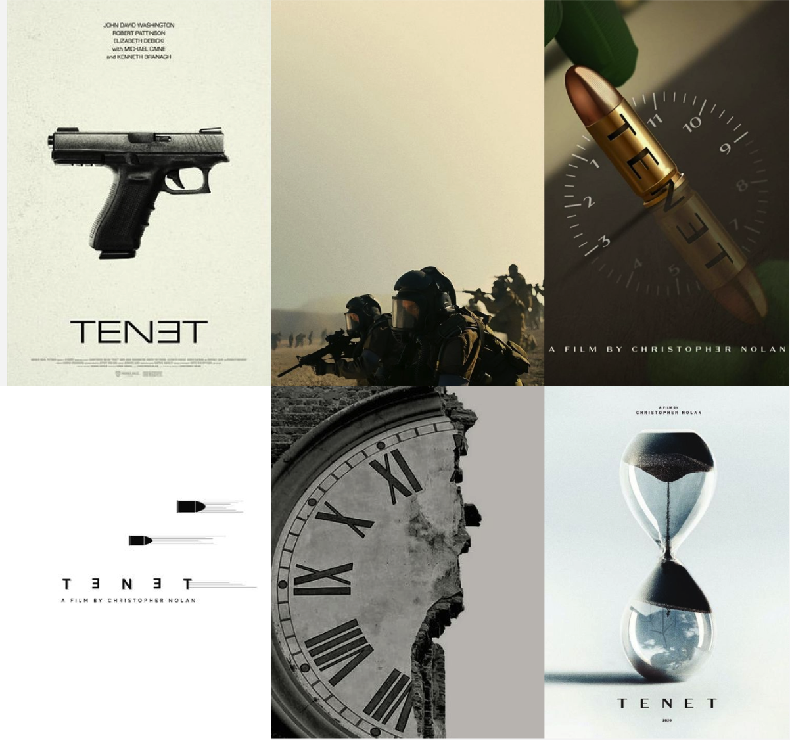

Process dynamic poster
Research
Christopher Nolan, een gerenommeerde regisseur bekend om zijn complexe verhaallijnen en innovatieve filmmethoden, regisseerde de film "Tenet" in 2020. Deze sci-fi actiethriller draait om tijdinversie, een concept waarbij tijd in beide richtingen kan bewegen, en volgt een protagonist die probeert een wereldwijde catastrofe te voorkomen. De film kreeg gemengde recensies vanwege de ingewikkelde plot, maar werd geprezen om zijn spectaculaire visuele effecten en intense actie. Nolan gebruikte praktische effecten en minimaliseerde CGI, wat bijdroeg aan de realistische uitstraling van de film. "Tenet" werd een van de meest besproken films van 2020 en illustreerde opnieuw Nolan's vaardigheid in het creëren van ambitieuze en gedachteprikkelende cinema.
Moodboard
Mijn moodboard voor het ontwerp van de dynamische poster van “Tenet” bevat diverse elementen die de sfeer en thema’s van de film vastleggen. De afbeeldingen tonen iconische symbolen zoals een pistool, een kogel met de filmnaam, en een zandloper die de tijd symboliseert. De aanwezigheid van soldaten en een versplinterde klok benadrukken de actie en het thema van tijdmanipulatie. Deze visuele referenties dienden als inspiratie voor het uiteindelijke ontwerp, waarbij de nadruk ligt op de unieke combinatie van tijd, actie en mysterie die “Tenet” kenmerkt.
Concepttekeningen
De concepttekeningen voor de film “Tenet” geven een intrigerende eerste blik op de visuele en thematische elementen die regisseur Christopher Nolan voor ogen had. De eerste tekening toont een klok, een symbool dat vaak wordt geassocieerd met tijd en de passage ervan. Dit is passend gezien het thema van de film, waar tijdmanipulatie een centrale rol speelt. De wijzers van de klok lijken verstoord, wat een visuele indicatie kan zijn van de ingewikkelde tijdstructuren en -verstoringen die de kijker zal ervaren. De tweede tekening bevat pistolen, met het woord “TENET” in het midden. Dit kan een weergave zijn van het geweld en de actie die centraal staan in de film, gecombineerd met het concept van tijdomkering. De richting van de pistolen suggereert een confrontatie of een dualiteit, wat een kernmechanisme in de plot van “Tenet” vormt. De derde tekening toont een zandloper, een traditioneel symbool van tijd, met aan weerszijden de naam van de regisseur, Christopher Nolan, en de vermelding “starring,” gevolgd door lege plaatsen waar waarschijnlijk de namen van de hoofdrolspelers zouden komen. De zandloper benadrukt opnieuw de focus op tijd, maar dan in de vorm van een langzaam maar onverbiddelijk verstrijken ervan, wat misschien verwijst naar de constante strijd tegen de klok die de personages in de film voeren. Deze concepttekeningen bieden een fascinerende kijk op de vroege stadia van het creatieve proces achter “Tenet” en leggen de nadruk op de complexe tijdthema’s die de film zo uniek maken, terwijl ze ook de actievolle en intense aard van het verhaal benadrukken.
Statisch Design
Het statisch design voor mijn dynamische poster begon met het selecteren van kern elementen uit de film “Tenet,” zoals het vuurwapen, de kogel en de titel. Het vuurwapen en de kogel zijn ontworpen met vector illustratietechnieken om een realistisch en modern uiterlijk te creëren. De titel is vormgegeven met de kenmerkende typografie van de film om de urgentie en het thema van tijdomkering te benadrukken. Door zorgvuldig de lay-out en compositie te balanceren, heb ik een visueel aantrekkelijk en thematisch consistent ontwerp gerealiseerd.


Code & Motion
Na een uitgebreid ontwerpproces is dit het uiteindelijke resultaat geworden van mijn dynamische posterproject voor de film “Tenet.” De poster combineert statische ontwerpen en een werkende animatie om de complexe en intense sfeer van de film vast te leggen. Het ontwerp bevat een mix van iconische elementen zoals het vuurwapen, de kogel, en de kenmerkende typografie van de film, allemaal harmonieus gerangschikt om visuele aantrekkingskracht en thematische consistentie te waarborgen. Dit eindresultaat weerspiegelt zowel de creatieve als technische inspanningen die zijn geleverd om een meeslepende en visueel aantrekkelijke presentatie te creëren.